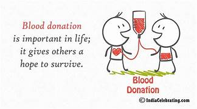
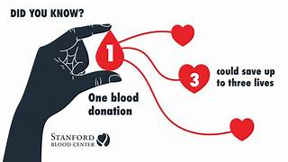

Be a Hero, Save a Life!
Why Donate Blood?

Blood donation is a simple, safe process that can save lives. Every donation can help multiple patients in need of blood transfusions.
Did you know that one donation can save up to three lives? Your blood can be separated into different components, which can be used for various medical conditions.
By donating blood, you not only help those in immediate need but also contribute to the overall health of your community. Your decision to donate can make a significant difference!
Blood Donation Facts and Tips
-
One donation can save up to three lives! Your blood can be separated into different components, which can help multiple patients.
-
Donating blood is safe! Sterile equipment is used for each donation, and the process is monitored by professionals.
-
It's quick and easy! The donation process typically takes about 10-15 minutes, with additional time for registration and refreshments.
-
You can donate every 56 days. This allows your body enough time to replenish the blood supply.
-
Tips for Donors:
- Stay hydrated by drinking plenty of water before donating.
- Eat a healthy meal prior to your donation, avoiding fatty foods.
- Get a good night's sleep before the donation day.
- Wear clothing with sleeves that can be easily rolled up.
Who Can Donate Blood?

Age
Donors should be between 18 to 65 years old.
Weight
You must weigh at least 50 kg (110 lbs).
Health
Must be in good health and feel well on the day of donation.
Interval
You can donate every 8 weeks (56 days).
Identification
Bring a valid photo ID with you to the donation center.